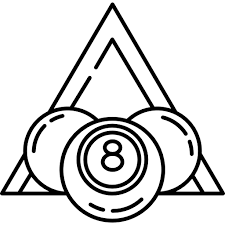
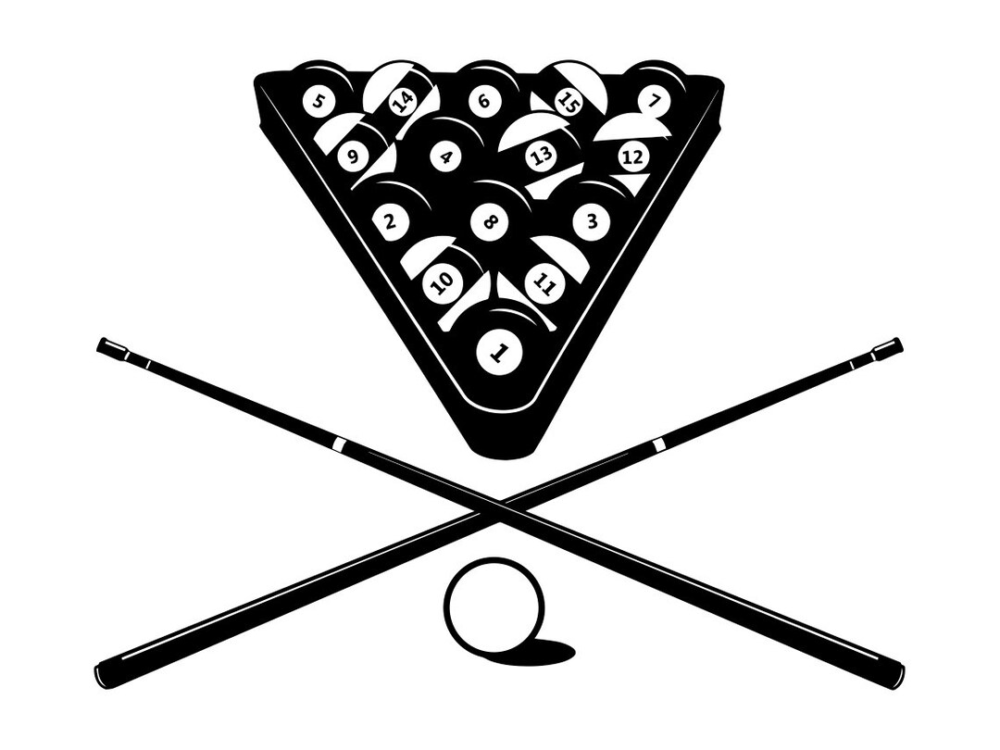

Нэвтрэх

Нүүр
Клуб
Газар
Тэмцээн
Дүрэм
Ерөнхийдөө, тоглоомыг уйтгартай, илүү найрсаг (тоглогчид, шүүгчид, үзэгчдийн хувьд) болгохын тулд аль болох олон дүрэм, алдааг хасч, туршлагагүй тоглогчид сурч, ойлгоход хялбар болгоно.
Дүрэмтэй холбоотой бүх зүйлийг Дүрмийн баримт бичгээс Дүрмийн баримт бичигт шилжүүлэх талаар бодож үзээрэй, ингэснээр бүх чухал дүрмийн дэлгэрэнгүй мэдээлэл нэг дор байх болно.
Үгүй бол, хэрэв журамд дүрмийн талаар чухал зөвлөгөө, удирдамж орсон бол зохих Дүрэм хэсгийн зохих журмын хэсгийг үргэлж холбоно уу.
Хүнд дохио, гарт байгаа СБ, биеийн аль ч хэсгийг онилж, хэмжихийг зөвшөөрч, дохиог гар хүрэхгүйгээр буулгахыг зөвшөөр.
Бөмбөгт цохиулсан зөөлөвч (CB эсвэл OB) нь хөлдсөн OB-г "дэр рүү жолоодсон" гэж тооцохын тулд "дэр рүү жолоодох" хууль ёсны дүрмийг шинэчил. Үгүй бол, хөлдсөн OB-г зөөлөвч рүү цохих үед зөөлөвчийг өөр зөөлөвч рүү (эсвэл бөмбөгнөөс салгаад буцаад ижил зөөлөвч рүү) түлхэх шаардлагатай.
3 онооны завсарлагааны дүрэм хүчинтэй байх үед толгойн утсанд хүрэх бөмбөгтэй холбоотой шаардлагыг толгойн утсыг давах болгон өөрчлөх шаардлагатай. Бөмбөг гал тогооны өрөөнд байгаа эсэхээс үл хамааран бөмбөгний амрах цэг нь толгойн утастай хаана байгааг харгалзан үзэх ёстой.
Механик гүүртэй холбоотой дүрмийг нэг эсвэл хоёр механик гүүрийг тоглогчийн сонгосон ямар ч хэлбэрээр ашиглах боломжийг олгохын тулд өөрчлөх ёстой. Энэ нь энэ видеонд үзүүлсэн бүтээлч гүүрний бүх сонголтуудыг хуульчлах болно.
Халааснаас бөмбөг гарч ирэх дүрмийг өөрчлөх талаар бодож үзээрэй. Одоогийн байдлаар OB халааснаасаа гарч ирээд тоглоомын талбай дээр буувал бөмбөг халааслаагүй мэт тоглолт үргэлжилнэ. Гэсэн хэдий ч, хэрэв CB халааснаасаа гарч ирвэл халаасан дахь бөмбөгөнд хүрсэн бол энэ нь алдаа болно (энэ нь шүүлтийн дуудлага байж болно, жишээлбэл, CB халаасанд олон бөмбөгтэй халаасны араас үсэрсэн тохиолдолд) ).
Энд байж болох өөр дүрмүүд байна: “Хэрэв ямар нэгэн бөмбөг (CB эсвэл OB) шидэлтийн үеэр төмөр замын аль нэг хэсэг, халаас, бөмбөгийг онож, цохилтын дараа тоглолтын гадаргуу дээр тогтвол бөмбөг тоглож байна гэсэн үг. ямар ч зөрчилгүй (хэрэв бөмбөгийг зориудаар орхиж эсвэл халаасандаа нэмэхгүй бол маажихад хүндрэл учруулахгүй бол энэ нь спортын бус алдаа гаргах болно)."
9 бөмбөг таслах дүрмийг илүү орчин үеийн стандарт болгон (жишээ нь, 9-р тавиур, хайрцагнаас таслах, 3-н оноо эсвэл хүчтэй таслах дүрэм, тавиурын загвар, 1-ээс өөр бөмбөгийг санамсаргүй байдлаар байрлуулах) тохируулах талаар бодож үзээрэй. завсарлагатай холбоотой олон асуудал.
Зөвхөн үзүүр нь CB-ийн дээд хагаст (хэвтээ экваторын дээгүүр) хүрсэн тохиолдолд л үсрэх цохилтыг зөвшөөрөхийг шаардах талаар бодож үзээрэй. Энэ нь энэ видеонд үзүүлсэн утгуур буудлага (санаатай ч юм уу, үгүй ч юм уу), өргөлтөөр үсрэх, халаасны тороор үсрэхээс сэргийлнэ.
Харааны нотлох баримтууд (шууд, эсвэл боломжтой бол шууд видеог дахин тоглуулах боломжтой) тодорхой болоогүй бол зөрчлийг дуудаж болохгүй гэдгийг тодорхой болго. Үгүй бол эргэлзээний ашиг нь мэргэн буучдад үргэлж очих ёстой (өөрөөр хэлбэл, ямар ч алдаа гэж нэрлэх ёсгүй).
CB нь зөөлөвч болон хөлдсөн эсвэл зөөлөвчтэй ойрхон зэрэгцэн мөргөх үед алдаа гарсан эсэхийг тодорхойлоход хэцүү байж болно (ХБ-ийг хүрэлцсэний дараа зөөлөвч рүү хөтөлсөн эсэхээс хамаарч) . Жишээ нь: SVB UK Open FOUL Shot